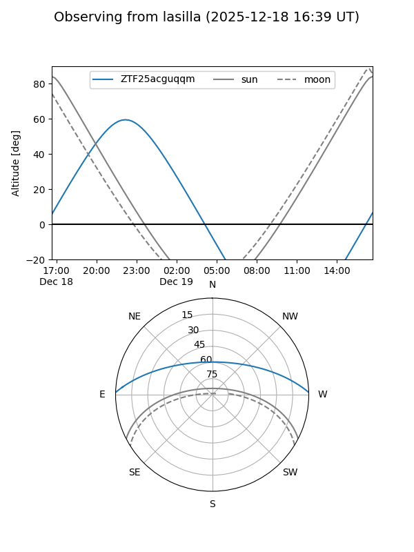
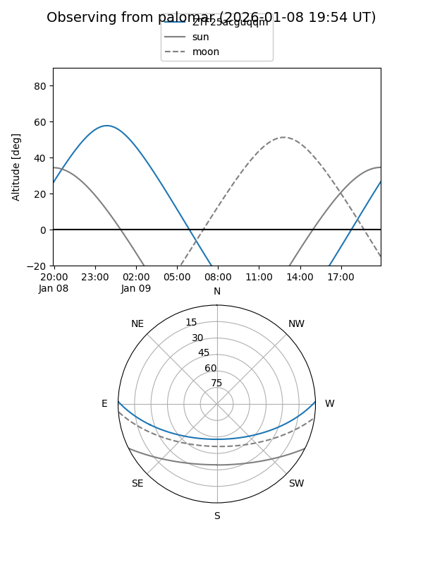

ZTF25acguqqm
Target ZTF25acguqqm at 2025-12-31 16:59
Aliases and brokers:
FINK:
Lasair:
ALeRCE:
alt names
ZTF25acguqqm (ztf,fink_ztf)
Coordinates:
equatorial (ra, dec) = 349.2634,+1.05671
equatorial (HMS+DMS) = 23:17:03.21,+01:03:24.17
galactic (l, b) = (80.2641,-53.80658)
Flags:
Photometry:
last ztfg=20.15
1 ztfg detections
Lightcurve

Visibility


Additional plots